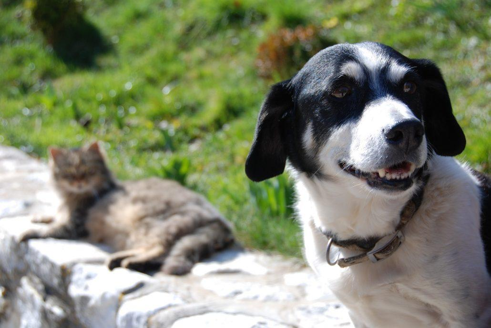

“Como el perro y el gato”, seguro que habéis escuchado muchas veces esta expresión refiriéndose a dos personas que tienen una relación poco amistosa. Sin embargo, es más bien una leyenda urbana eso de que gato y perro están siempre peleando y no pueden vivir juntos. Si queréis tener un perro y un gato en este artículo encontraréis algunas recomendaciones y si todavía tenéis dudas, pedid consejo al veterinario, que os ayudará a que vuestras dos mascotas tengan una buena relación. Y, sobre todo, no sufráis: en este caso, el éxito es más probable que el fracaso.
Es cierto que gatos y perros son dos especies muy diferentes y para comunicarse usan señales acústicas distintas como los ladridos o los maullidos, o visuales como la postura del cuerpo. A veces, estas señales son claras porque hay un código universal compartido entre especies diferentes (los sonidos graves indican una amenaza), pero hay otras señales que son específicas de cada especie y entonces es cuando puede aparecer el conflicto. Por ejemplo: